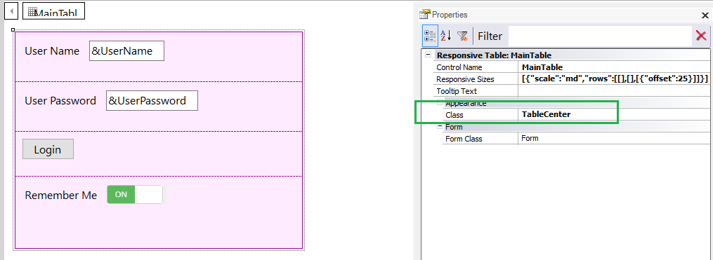
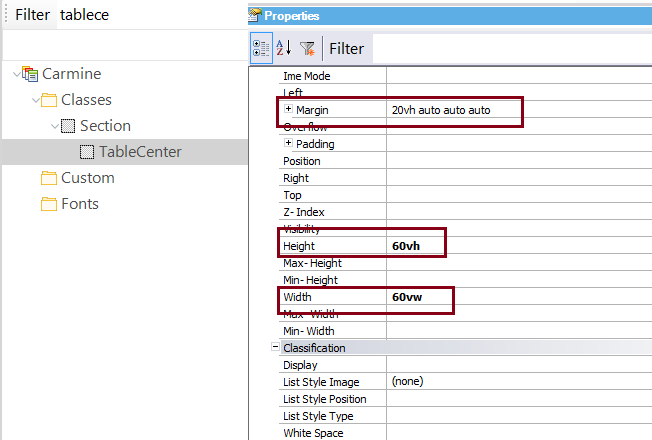
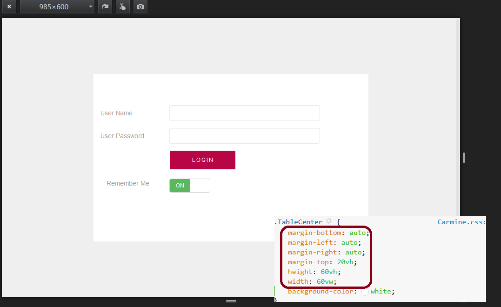
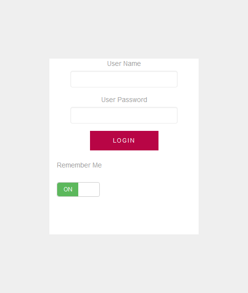

Consider a Responsive Web Application where we need to center the login window in the web page. By setting an element’s width, height and margins in viewport units, you can center it very easily. In our example, the login web panel's main Responsive Table has the Class property set to "TableCenter", which is a class we've defined in the Theme.  The "TableCenter" class has the following properties:
width: 60vw;
height: 60vh;
margin: 20vh auto;
 At runtime it looks as follows:  Running in a phone, it looks like this: 
|
| Backlinks |
| Using relative length units on the web |